| 과목명 | 영어음성학 응용 |
| 학과 | 영어영문학과 |
| 학번 | 2023130846 |
| 이름 | 노준형 |
| 제출일 | 2026년 10월 29일 |
본 프로젝트는 내향적인 대학생을 위한 AI 기반 1:1 소개팅 앱 ‘초식남녀’를 기획하고, 사업의 필요성과 이용 방식을 모션 그래픽과 AI 영화로 표현하는 것을 목표로 한다.
초식남녀는 학생증으로 대학생임을 인증하고, 학생증 사진과 사용자가 입력한 이상형 정보를 바탕으로 AI가 서로의 취향을 고려한 한 사람을 소개하는 서비스다. 두 사람이 모두 수락하면 사진 공개 없이 약 일주일 동안 한 사람과만 대화한다. 이후 상호 동의를 바탕으로 가까운 곳에서의 실제 만남으로 이어지도록 돕는다.
서비스 대상은 특정 지역으로 한정하지 않고, 새로운 인연을 원하지만 먼저 다가가기 어려운 내향적인 대학생으로 정했다.
| 제출물 | 내용 |
|---|---|
| 모션 그래픽 | 서비스가 필요한 이유와 6단계 이용 절차를 설명하는 89초 영상 (1080×1080) |
| AI 영화 | 단편 애니메이션 〈만나기까지, 일주일〉, 87.5초 (1920×1080) |
| 보고서 | 사업 구상, 유사 서비스 비교, 두 영상의 기획과 제작 과정, 사용 도구와 출처 (본 문서) |
이 사업은 기획자 본인의 경험에서 출발했다. 새로운 이성을 만나고 싶어도 내향적인 사람에게는 먼저 다가가거나 호감을 표현하는 일이 쉽지 않다. 일일호프나 헌팅 포차처럼 적극적인 접근과 즉흥적인 대화가 필요한 장소는 부담스럽게 느껴질 수 있다.
지인에게 소개팅을 부탁하는 방법도 있지만, 소개를 주선해 줄 사람의 폭이 좁다면 만남의 기회가 제한된다. 새로운 관계를 원하면서도 행동으로 옮기지 못하는 상황이 반복될 수 있다. 초식남녀는 이러한 경험을 바탕으로, 먼저 다가가는 일이 어려운 대학생도 자신에게 맞는 속도로 인연을 시작할 수 있도록 기획했다.
이러한 문제는 현재 개인적인 경험에서 도출한 가설이며, 실제 이용자 인터뷰와 시범 운영을 통해 검증할 필요가 있다.
서비스 이름은 ‘초식남녀’다. 적극적인 접근이 조심스러운 사람들을 친근하게 표현하면서, 서두르지 않고 관계를 시작하는 서비스의 성격을 담았다. 브랜드는 따뜻하고 편안하며 약간의 유머가 있는 분위기를 지향한다. 이름이 내향적인 사람을 부정적으로 규정하지 않도록, 사용자의 성격을 바꾸기보다 편안한 시작을 돕는 데 초점을 맞춘다.
대표 이미지는 크레파스로 그린 듯한 연두색 초식 공룡이다. 공룡이 작은 하트를 품고 수줍게 웃는 모습으로 새로운 관계에 대한 기대와 조심스러움을 표현했다. 모션 그래픽에서는 같은 공룡의 색을 분홍색으로 바꾼 캐릭터를 상대(초식녀)로 함께 사용했다. 아이보리 배경, 부드러운 초록색, 분홍색 하트로 따뜻한 인상을 준다.
여기서 ‘저희’는 초식남녀 서비스를 가리킨다. 서비스가 먼저 다가가 한 사람을 소개하지만, 실제 관계는 두 사람이 직접 만들어 간다는 서비스의 역할을 나타낸다. 처음에는 “먼저 다가가는 건 AI가”로 정했으나, 기술보다 서비스가 사용자 곁에서 돕는다는 느낌을 주기 위해 ‘저희가’로 바꾸었다.
주요 고객은 새로운 인연을 원하지만 먼저 다가가기 어렵고, 지인을 통한 소개 기회도 적은 내향적인 대학생이다.
초기 구상에서는 기획자의 생활권인 서초구·강남구 거주 대학생으로 대상을 한정하려 했다. 그러나 지역을 앞세우면 서비스의 핵심인 ‘내향적인 대학생을 위한 서비스’라는 메시지가 흐려진다고 판단해, 현재는 지역 한정 없이 내향적인 대학생을 대상으로 기획을 정리했다.
실제 만남으로 이어지기 쉽도록 서로 가까운 곳에서 만날 수 있는 상대를 소개하는 방식을 검토한다. 다만 대학생 신분과 상호 이상형 조건을 함께 적용하면 초기에는 매칭 대상이 부족할 수 있으므로, 소규모 시범 운영에서 대기 시간과 매칭 성사율을 확인한 뒤 운영 범위를 조정할 계획이다.
사용자는 학생증을 촬영해 대학생 여부를 인증한다. 이때 학생증에 있는 사진을 AI 매칭용 사진으로 활용한다. 별도로 사진을 고르고 올리는 과정을 줄이고, 인증된 신분과 매칭에 쓰이는 사진을 하나로 연결하기 위한 결정이다. 학생증 사진은 상대방에게 공개하지 않는다.
학생증 사진은 촬영 시기가 오래되었거나 화질이 낮을 수 있고, 학생증 인증만으로 현재 사용자 본인임이 보장되지는 않는다. 따라서 본인 확인 보완 방법과 학생증 이미지의 보관·삭제 방식은 개인정보 보호 관점에서 별도로 설계해야 한다.
사용자는 설문, 텍스트, 참고 이미지로 선호하는 외모와 특징을 전달한다. ‘두부상’처럼 특정한 얼굴 분위기를 표현하거나, 원하는 인상과 가까운 이미지를 제시할 수 있다. 이러한 표현은 사람마다 의미가 다르므로 예시 이미지와 추가 질문으로 취향을 구체화하는 방식을 검토한다. 관심사, 성격, 대화 방식은 사용자가 직접 작성한 설문을 활용하며, 사진만으로 성격이나 가치관을 판단하지 않도록 정보를 구분해 사용한다.
AI는 학생증 사진과 이상형 정보를 함께 고려해 상대를 소개한다. 한쪽의 취향만 반영하지 않고, 서로가 상대의 선호에 부합하는지를 함께 고려하는 것이 목표다. 사용자는 여러 프로필을 직접 탐색하거나 먼저 신청하지 않고 AI의 소개를 받는다. 소개 화면에는 사진 대신 공통 관심사 등 입력 내용에 근거한 추천 이유를 보여 주는 방안을 검토한다.
현재 AI 매칭은 기획 단계다. 구체적인 모델, 학습 데이터, 평가 방법과 추천 정확도는 구현과 검증을 거쳐 결정해야 한다. AI가 완벽한 이상형이나 관계의 성공을 보장하지는 않는다.
소개받은 두 사람은 각각 연결 여부를 선택하고, 양쪽 모두 수락한 경우에만 대화를 시작한다. 개별 거절 여부를 상대에게 직접 전달하지 않아 호감을 표현하고 거절받는 부담을 줄인다. 수락 기한, 미응답 처리, 재매칭 절차는 운영 규칙으로 구체화한다.
매칭된 사용자는 약 일주일 동안 한 사람과만 대화하며, 이 기간에는 추가 소개를 중단해 한 관계에 집중하도록 한다. 외모 취향은 AI의 소개 과정에 반영하되, 연결된 뒤에는 대화로 서로의 관심사와 분위기를 알아간다. 첫 대화가 어려운 이용자를 위해 공통 관심사와 가벼운 질문을 제안하는 기능도 검토하며, 초기 대화는 앱 안에서 진행한다.
약 일주일이 지나면 서로 만나볼 의사를 비공개로 확인한다. 양쪽 모두 동의하면 가까운 곳에서 일정과 장소를 정하도록 돕는다. 대면 만남을 지향하되 강제하지 않으며, 조기 만남, 대화 연장, 중도 종료와 재매칭 방식은 이용자 의견을 반영해 결정한다.
2026년 10월 29일 확인한 공식 홈페이지와 앱스토어 공개 설명을 바탕으로 썸타임과 하루야를 조사했다. 실제 가입 후 모든 기능을 검증한 것은 아니므로, 공개 자료에서 확인되지 않은 기능이 없다고 단정하지 않았다.
| 항목 | 썸타임 | 하루야 | 초식남녀 기획 |
|---|---|---|---|
| 상대 탐색 | 지역·선호 기반 추천 후 관심 확인 | 조건과 프로필을 보고 직접 선택 | AI가 상호 취향을 고려해 한 사람을 소개 |
| 인증 | 대학 인증 표시 제공 | 학생증·본인 인증 안내 | 학생증 인증, 학생증 사진을 매칭에 활용 |
| 사진 | 블라인드·사진 매칭 관련 기능 안내 | 사진 대신 캐릭터 사용 | 학생증 사진은 매칭에만 쓰고 상대에게 비공개 |
| 대화 | 앱 내 채팅 | 카카오톡 아이디 교환 안내 | 약 일주일간 앱 내 1:1 대화 |
| 관계 집중 | 동시 매칭 제한 규칙 확인 필요 | 동시 매칭 제한 규칙 확인 필요 | 같은 기간 한 사람과만 연결 |
| 대상 | 대학생, 지역·생활권 기반 추천 | 대학생, 지역·근처 학교 탐색 | 내향적인 대학생 |
| 대면 만남 | 정해진 일주일 후 절차는 공개 자료에서 확인하지 못함 | 정해진 일주일 후 절차는 공개 자료에서 확인하지 못함 | 약 일주일 후 상호 만남 의사 확인, 가까운 곳에서 만남 |
썸타임은 지인 차단과 같은 학교·학과 제외 기능을 제공하며, 일부 기능에 앱 내 재화인 ‘구슬’을 사용한다고 안내한다. 앱 업데이트에는 가치관 분석과 대화 소재 제공 기능도 소개되어 있다. 하루야는 사진 대신 캐릭터와 이상형 관련 정보를 활용하며, 서로 선택하면 카카오톡 아이디를 교환하는 절차를 안내한다. 소개팅 외에 과팅과 친구 찾기 기능도 제공한다.
대학생 인증, 지역 기반 추천, 사진 비공개는 기존 서비스에도 있으므로 개별 기능만으로 독창성을 주장하기는 어렵다. 초식남녀는 다음 요소를 내향적인 사용자를 위한 하나의 이용 과정으로 연결하는 데 차별화 방향을 둔다.
이러한 가치가 실제 이용자에게 유효한지는 시범 운영으로 확인해야 한다.
| 단계 | 내용 |
|---|---|
| 1. 사용자 조사 | 내향적인 대학생을 인터뷰해 기존 만남 방식의 어려움과 서비스 반응을 조사한다. 사진 비공개, 학생증 사진 활용, 일주일간 한 사람과의 대화, AI 추천에 대한 신뢰를 중점적으로 확인한다. |
| 2. 시제품 | 학생증 인증, 이상형 입력, 소개 수락, 대화, 만남 의사 확인으로 구성된 시제품을 만들고, 이용자가 설명 없이 흐름을 이해하는지 확인한다. |
| 3. 시범 운영 | 소규모 참여자를 모집해 매칭 대기 시간, 상호 수락률, 대화 지속 여부, 대면 만남 동의 여부와 만족도를 살펴본다. |
| 4. 개선 | 시범 운영 결과로 매칭 방식과 운영 규칙을 개선하고, 운영 범위 확대를 검토한다. |
이용 요금과 수익 모델은 확정하지 않았다. 초기에는 서비스의 필요성과 이용 경험을 검증하는 것이 우선이다. 정기 구독이나 매칭 회차 이용권 등을 검토할 수 있지만, 추가 결제로 같은 기간 여러 사람을 소개하는 구조는 한 사람에게 집중한다는 기획과 충돌할 수 있다. 핵심 경험을 유지하면서 사용자가 지불할 가치를 확인하는 방향으로 설계한다.
| 길이·규격 | 89초, 1080×1080 (정사각형), 24fps, 배경음악 포함 | 파일 | 2023130846_노준형_모션그래픽.mp4 |
모션 그래픽은 서비스가 필요한 이유와 이용 절차를 이해하기 쉽게 설명하기 위한 영상이다. 참고 영상(14장 참고 자료 8번)을 분석해 종이를 오려 붙인 콜라주 질감, 흰 찢긴 테두리, 한 글자씩 써지는 손글씨 자막, 캐릭터 주변의 방사형 선 장식, 장면마다 바뀌는 배경색을 스타일 기준으로 삼았다. 크레파스 공룡을 주인공(초식남)으로, 색을 분홍으로 바꾼 공룡을 상대(초식녀)로 등장시켰다.
| 시간 | 장면 | 내용 |
|---|---|---|
| 0:00–0:20 | 문제 제시 | 밤 창가의 공룡(“연애는 하고 싶은데…”), 호프집 구석에서 땀 흘리는 공룡(“먼저 다가가는 건 너무 떨려”), 소개해 줄 친구가 없는 장면, 앱에서 신청해도 답이 없는 장면 |
| 0:17–0:24 | 해결 제시·타이틀 | 종이비행기 편지 “먼저 다가가는 건, 저희가 할게요!”, 초식남녀 로고 |
| 0:24–0:31 | 6단계 개요 | “초식남녀는 이렇게 연결해요”: 6단계 아이콘이 점선으로 이어지며 “가입부터 만남까지, 단 6단계” |
| 0:31–1:06 | STEP 1~6 | 학생증 인증(학생증 사진이 AI 스캔으로 이동, “학생증 사진으로 AI가 매칭해요”) → 이상형 입력 → AI 1:1 매칭 → 비공개 수락 → 사진 없이 일주일 대화 → 가까운 동네에서 실제 만남 |
| 1:06–1:29 | 마무리 | 하트 콜라주, 차별화 카드 4장, 창가 엔딩, 슬로건 노트(“우리가”에 빨간 동그라미), 로고와 “내향인 대학생을 위한 1:1 소개팅 앱” |
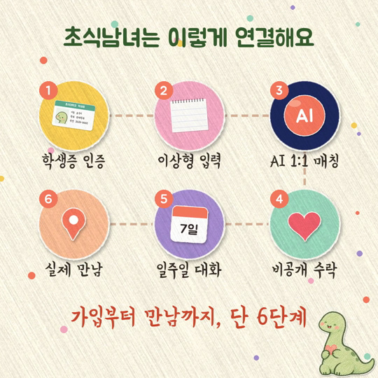
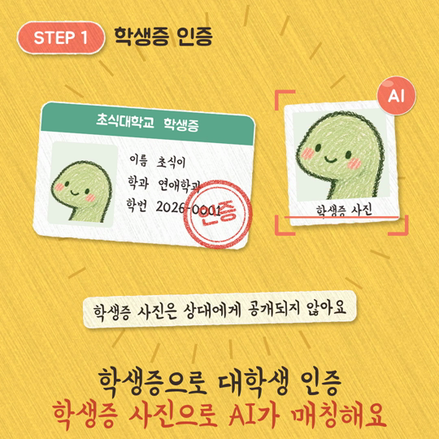
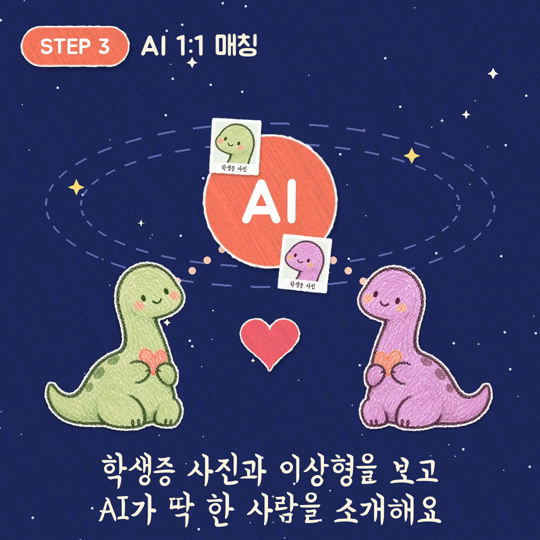
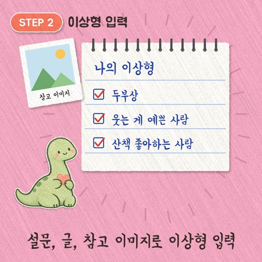
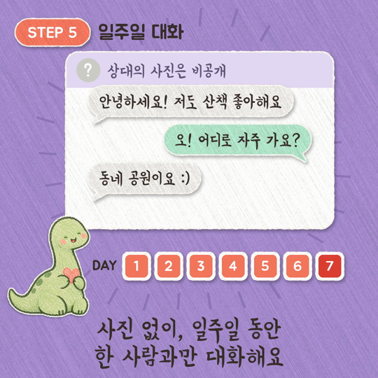
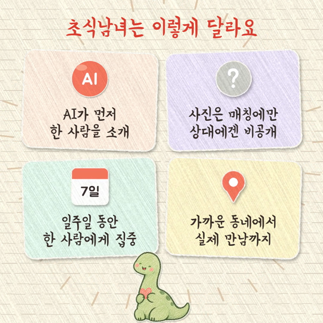
영상은 Python(Pillow, NumPy, SciPy)으로 프레임을 한 장씩 그리고 ffmpeg으로 인코딩하는 방식으로 만들었다. 종이 질감, 찢긴 테두리, 그림자는 노이즈와 블러 처리로 구현했고, 공룡 그림은 배경을 제거해 스티커처럼 사용했다. 배경음악은 피아노 소리를 배음 합성 방식으로 직접 만들어 저작권 문제가 없도록 했다. 코드 작성과 렌더링은 AI 어시스턴트 Claude(Anthropic)의 도움을 받았고, 제작 코드는 GitHub 저장소의 src/dino_motion/에 함께 제출한다.
| # | 수정 요청 | 반영 내용 |
|---|---|---|
| 1 | 레퍼런스 스타일 적용 | 인포그래픽형 초안을 종이 콜라주 스토리북 스타일로 다시 제작하고, 공룡을 주인공으로 설정 |
| 2 | 대상 표현 변경 | ‘서초·강남 대학생’ 문구를 ‘내향인 대학생’으로 변경 |
| 3 | 완성도 보완 | 장면별 공룡 표정 3종, 첫 장면 구도 수정, 작은 글씨 확대, 반복되던 노트 장면 정리, 종이 넘김 전환 추가 |
| 4 | 슬로건 변경 | “먼저 다가가는 건 AI가” → “먼저 다가가는 건 저희가” |
| 5 | 문구·글꼴 | 자막 문구 수정, 글꼴을 주아체 단독에서 연성체(본문)와 주아체(제목) 조합으로 변경 |
| 6 | 배경음악 | 오르골 → 어쿠스틱 기타 → 잔잔한 피아노로 변경 |
| 7 | 서비스 내용 강조 | 고민 장면을 줄이고 6단계 개요 장면 추가, 학생증 사진이 AI 매칭으로 이어지는 연출 추가, 단계별 제목 표시 |
| 길이·규격 | 87.5초, 1920×1080, 30fps | 장르 | 대학생 로맨스 단편 애니메이션 |
| 핵심 메시지 | 조심스러운 사람에게도 인연을 시작할 방법은 필요하다. | ||
모션 그래픽이 서비스 구조를 설명한다면, AI 영화는 사용자의 감정과 경험을 보여 준다. 먼저 다가가기 어려운 주인공이 서비스를 통해 한 사람을 알아가고, 실제 만남을 시작하는 과정을 이야기로 구성했다.
지호는 내향적인 대학생이다. 검은 머리와 둥근 안경, 겨자색 후드티, 청바지, 회색 가방으로 외형을 설정했다. 낯선 관계 앞에서는 긴장하지만 대화가 이어지면서 점차 편안해진다. 서연은 차분하고 조심스러운 대학생이다. 앞머리가 있는 갈색 머리, 세이지색 카디건, 흰 티셔츠, 베이지색 긴 치마, 에코백을 주요 특징으로 설정했다. 지호와 마찬가지로 관계의 시작을 망설이지만 일상적인 대화를 통해 마음을 연다.
초반에는 캠퍼스에서 혼자 있는 지호와 새로운 만남을 망설이는 모습을 보여 준다. 이후 지호는 초식남녀에 가입해 학생증으로 인증하고 이상형을 입력하며, AI가 소개한 상대를 수락한다. 서연도 소개를 수락하며 두 사람의 대화가 시작된다. 도서관, 버스, 방 등 각자의 일상에서 메시지를 주고받으며 조금씩 웃게 되고, 일주일 뒤 두 사람이 만남을 선택해 카페에서 처음 인사하는 장면으로 마무리한다.
연출에서는 초반에 지호 혼자 있는 구도를 쓰고, 대화가 이어질수록 두 사람의 장면을 번갈아 배치했다. 마지막 카페 장면에서 처음으로 두 사람이 같은 화면에 등장한다. 사진 비공개는 앱 화면에서 상대 사진 대신 ‘?’를 보여 주는 방식으로 표현했다.
오프닝 타이틀, 본편 16장면(각 5초), 엔딩으로 구성했다. 인물이 나오는 10장면은 AI 이미지를 영상으로 변환했고, 휴대폰 화면 6장면은 한글이 깨지지 않도록 별도 그래픽으로 제작했다.
| 컷 | 주요 내용 | 제작 방식 | 컷 | 주요 내용 | 제작 방식 |
|---|---|---|---|---|---|
| 0 | 오프닝 타이틀 | 그래픽 | 9 | 도서관에서 메시지를 읽는 지호 | AI 인물 영상 |
| 1 | 캠퍼스 벤치에 혼자 있는 지호 | AI 인물 영상 | 10 | 버스에서 답장하는 서연 | AI 인물 영상 |
| 2 | 일일호프 초대와 망설이는 답장 | 휴대폰 그래픽 | 11 | 대화와 날짜의 변화 | 휴대폰 그래픽 |
| 3 | 자취방에서 낙담한 지호 | AI 인물 영상 | 12 | 방에서 메시지를 보며 웃는 지호 | AI 인물 영상 |
| 4 | 소개를 부탁한 친구와의 대화 | 휴대폰 그래픽 | 13 | 7일째 만남 의사 확인 | 휴대폰 그래픽 |
| 5 | 초식남녀를 발견한 지호 | AI 인물 영상 | 14 | 카페에서 기다리는 지호 | AI 인물 영상 |
| 6 | 학생증 인증, 학생증 사진 매칭, 이상형 설문 | 휴대폰 그래픽 | 15 | 카페에 들어오는 서연 | AI 인물 영상 |
| 7 | 사진 없는 소개 카드와 수락 | 휴대폰 그래픽 | 16 | 마주 앉아 인사하는 두 사람 | AI 인물 영상 |
| 8 | 매칭을 수락하는 서연 | AI 인물 영상 | 17 | 크레파스 공룡과 로고, 슬로건 | 엔딩 그래픽 |
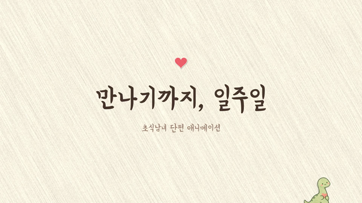
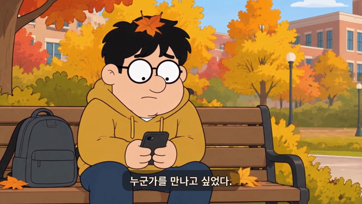
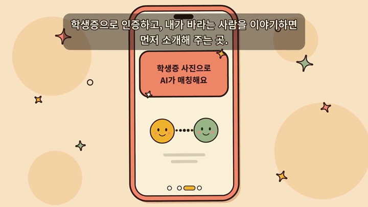
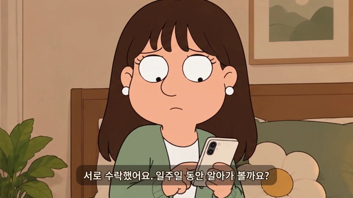
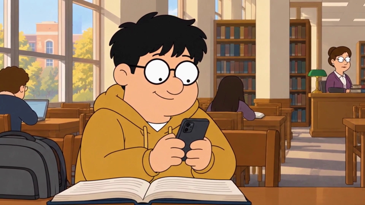
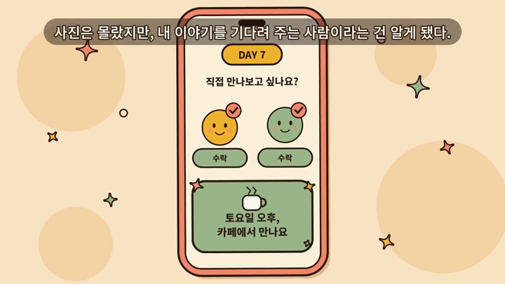
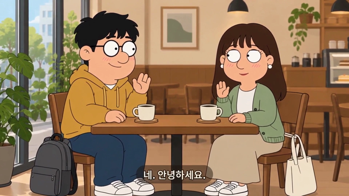
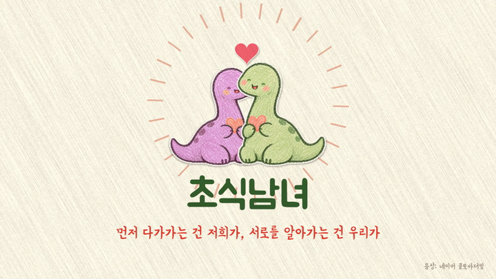
ChatGPT 이미지 생성 도구로 크레파스 질감의 초식 공룡을 만들었다. 연두색 몸, 수줍은 표정, 작은 하트를 주요 요소로 사용했고, 이 이미지를 앱 아이콘, 모션 그래픽, 영화의 오프닝과 엔딩에 함께 활용했다.
처음 생성한 인물은 키가 크고 부드러운 로맨스 애니메이션에 가까웠다. 이후 약 3~4등신의 코믹한 비율로 수정했다. ‘패밀리 가이’ 같은 미국 TV 시트콤 애니메이션의 과장된 비율과 단순한 표현을 시각적 참고 방향으로 삼았고, 큰 눈, 둥근 코, 짧은 팔다리, 굵은 외곽선으로 수줍고 어색한 상황을 유머 있게 표현하고자 했다. 원작 캐릭터와 닮지 않도록 지호와 서연은 새로 설정한 외형을 사용했다. 초기 시안 4장은 제외하고, 수정된 인물 기준표 1장과 장면 이미지 10장을 최종 작업용 자료로 정리했다.
인물 기준표를 먼저 만든 뒤, 각 장면을 생성할 때 같은 기준표를 참고 이미지로 사용해 얼굴, 머리, 안경, 의상의 특징을 유지했다. 캠퍼스, 자취방, 도서관, 버스, 카페 장면 이미지를 컷 번호에 맞춰 저장하고, Runway의 이미지 → 영상(Image to Video) 기능으로 각 장면을 움직이게 만들었다. 지호의 머리에 낙엽이 앉아 있거나, 메시지를 읽으며 입을 가리고 웃는 모습처럼 작은 코미디 요소를 더해 내향적인 주인공의 감정을 지나치게 무겁지 않게 표현했다.
AI 장면과 휴대폰 화면 그래픽을 4초 단위로 연결하고, 내레이션·대사 자막과 피아노 배경음악을 넣어 68초 분량의 1차 편집본을 완성했다.
| 보완 내용 | 방법 |
|---|---|
| 오프닝 타이틀 추가 | 본편 앞에 2.5초 길이의 〈만나기까지, 일주일〉 타이틀을 넣어 단편 영화의 형식을 갖추었다. |
| 엔딩 통일 | 엔딩을 모션 그래픽과 같은 크레파스 공룡(초록·분홍)과 로고, 슬로건으로 바꾸어 두 영상이 하나의 브랜드로 이어지도록 했다. |
| 내레이션 | 네이버 클로바더빙으로 내레이션과 대사 12문장을 문장별 음성 파일로 만들었다. |
| 속도 조절 (0.8배) | 전체 움직임이 빠르게 느껴져 본편을 0.8배로 늘렸다(64초 → 80초). 인물 장면은 중간 프레임을 새로 계산해 끼우는 보간 방식으로 부드럽게 했고, 휴대폰 화면은 글씨가 일그러지지 않도록 프레임 반복 방식을 썼다. 장면이 섞이지 않도록 16장면을 하나씩 따로 처리했다. |
| 음성·음악 재배치 | 내레이션은 원래 빠르기를 유지한 채 늘어난 장면의 자막 시점에 맞춰 다시 배치했다. 목소리가 나오는 동안에는 피아노 음량을 낮추었다. |
| 출처 표기 | 클로바더빙 무료 이용 조건에 따라 엔딩에 “음성: 네이버 클로바더빙”을 표기했다. |
최종 편집(오프닝·엔딩 그래픽 제작, 속도 조절, 음성 재배치)은 Claude(Anthropic)의 도움을 받아 Python과 ffmpeg으로 진행했다.
| 항목 | 상태 | 항목 | 상태 |
|---|---|---|---|
| 사업 기본 구상 | 완료 | AI 장면 영상화 (10장면) | 완료 |
| 공룡 브랜드 이미지 | 완료 | 휴대폰 화면 그래픽 (6장면) | 완료 |
| 모션 그래픽 (89초) | 완료 | 내레이션·자막·음악 | 완료 |
| AI 영화 대본·인물 기준표·장면 이미지 | 완료 | AI 영화 최종본 (87.5초) | 완료 |
| 보고서 | 완료 | GitHub 업로드 | 제출 시 진행 |
남은 한계: 일부 장면에서 음성과 자막의 표현이 조금 다르고(예: “저도 했는데 발표…”와 “저도요.”), 휴대폰 화면 장면의 자막이 화면 위쪽에 있어 앱 상단을 일부 가린다.
초식남녀는 내향적인 대학생이 먼저 접근해야 하는 부담을 줄이고, 한 사람과의 대화에 집중할 수 있는 만남의 방식을 제공하고자 한다. 일주일간의 대화 뒤 가까운 곳에서의 실제 만남까지 이어지는 경험을 만드는 것이 목표다.
다만 AI가 개인의 취향이나 두 사람의 관계를 완벽하게 예측할 수는 없다. 사진 비공개 방식과 학생증 사진 활용에 대한 반응도 이용자마다 다를 수 있으며, 학생증 이미지라는 민감한 개인정보를 안전하게 다루는 것이 운영상 중요한 과제다. 따라서 현재 단계에서는 매칭 성공이나 연애 성과를 보장하기보다, 실제 이용자에게 필요한 서비스인지 검증하고 운영 방식을 개선하는 것이 중요하다.
이번 프로젝트에서는 개인적인 불편함을 구체적인 서비스 이용 절차로 바꾸는 과정이 중요했다. ‘내향적인 사람을 위한 소개팅’이라는 방향을 실현하려면 상대 탐색, 관심 표현, 사진 공개, 대화 기간, 만남 제안까지 각 단계의 부담을 살펴봐야 했다.
유사 서비스 조사에서는 대학생 인증이나 사진 비공개만으로 차별화를 설명하기 어렵다는 점을 확인했다. 개별 기능을 추가하기보다, 대상 사용자가 처음부터 끝까지 어떤 경험을 하게 되는지 설계하는 것이 필요했다. 제작 도중 대상을 지역에서 ‘내향적인 대학생’으로 다시 정의하고 슬로건을 바꾼 것도 같은 고민에서 나온 결정이었다.
영상 제작에서는 AI가 만든 결과를 그대로 쓰기보다 선택하고 다듬는 과정이 완성도를 좌우했다. 인물 비율과 분위기를 수정하고, 공룡의 표정을 장면에 맞게 나누고, 움직임의 속도와 음악을 여러 번 바꾸면서, 기획 의도를 기준으로 AI 결과물을 판단하는 것도 제작의 일부임을 확인했다. 모션 그래픽은 사업의 구조를, AI 영화는 서비스가 필요한 사람의 감정을 전달하도록 역할을 나누었다.
| 도구·자료 | 사용 내용 |
|---|---|
| ChatGPT 이미지 생성 | 공룡 브랜드 이미지, 인물 기준표, AI 영화 장면 이미지 |
| Runway | AI 영화 장면 이미지를 영상으로 변환 |
| 네이버 클로바더빙 | AI 영화 내레이션·대사 음성 (무료 플랜, 출처 표기) |
| Claude (Anthropic) | 사업 구상 정리 보조, 모션 그래픽 제작 코드 작성, AI 영화 대본·프롬프트 정리, 최종 편집(오프닝·엔딩·속도 조절·음성 배치), 보고서 편집 |
| Python, ffmpeg | 모션 그래픽 렌더링, 배경음악 합성, 영상 편집 |
| 글꼴 | 배민 주아체(우아한형제들), 연성체 — Google Fonts 배포, SIL 오픈 폰트 라이선스 |
참고 자료 (유사 서비스 정보는 2026년 10월 29일 확인)
| GitHub 저장소 | https://github.com/maturejerk/2026Fall |
| 제출 파일 | 2023130846_노준형_모션그래픽.mp4, 2023130846_노준형_AI영화.mp4, 2023130846_노준형_보고서.pdf, README.md, 제작 코드(src/) |